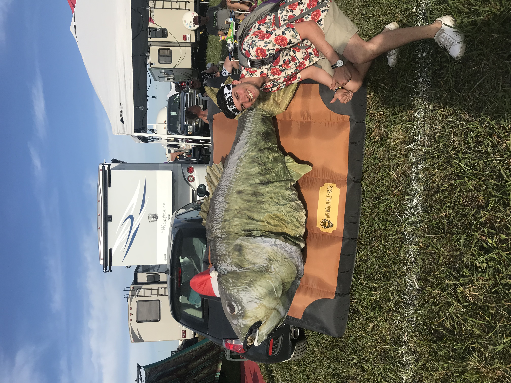
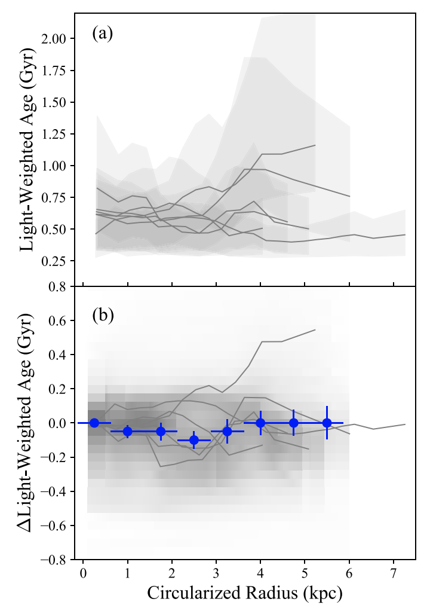
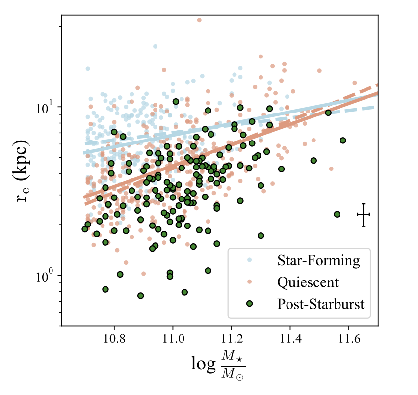
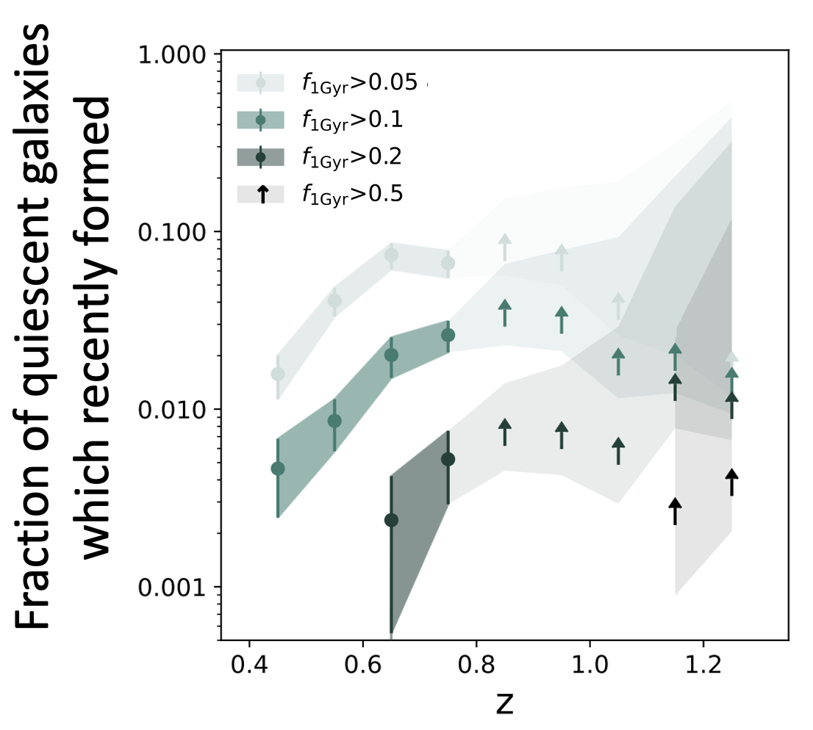
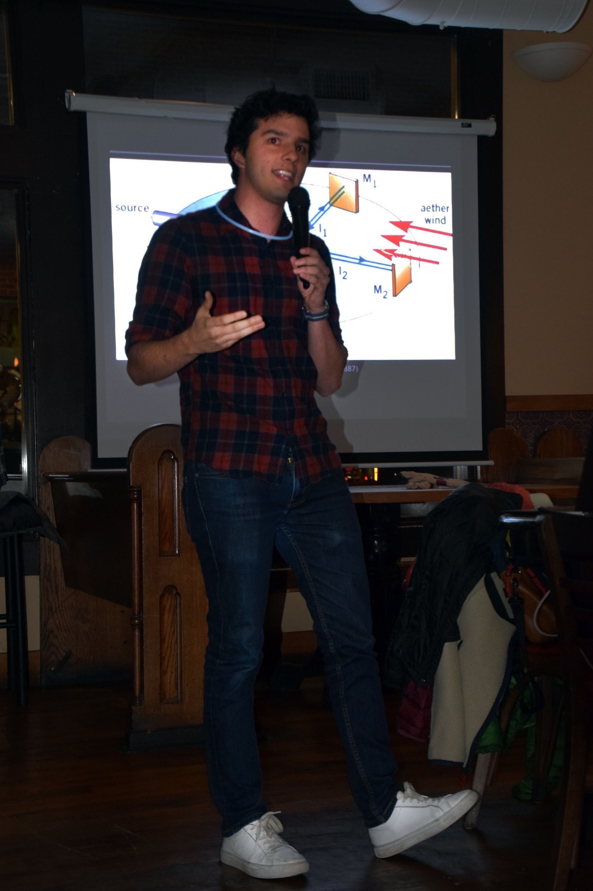

About Me

I am a Ph.D candidate at the University of Pittsburgh studying massive post-starburst galaxies as a part of the SQuIGGLE (Studying Quenching in Intermediate-Redshift Galaxies: Gas, anguLar momentum, and Evolution) Survey under the supervision of Dr. Rachel Bezanson. My research is focused on studying the spatially resolved stellar populations of galaxies which have recently shut off their primary epoch of star formation. When I'm not reducing Gemini data or fitting Sersic profiles, I am usually attending concerts, playing guitar for my band, or watching the Seahawks at a Pittsburgh dive bar.
Education:
May 2019-Present: Ph.D Candidate in Physics, University of Pittsburgh
Aug. 2017-May 2019: M.S. in Physics, University of Pittsburgh
Aug. 2013-May 2017: B.S. in Physics and Astronomy, University of Arizona
Publications: ADS
Research

Extended Post-Starburst Signatures in Massive z~0.6 Galaxies
Using GMOS IFU observations of galaxies in the SQuIGGLE survey, we observe extended H-delta absorption in our sample of massive galaxies at intermediate-redshift, indicating that the galaxies shut off their star formation simultaneously at all radii.
Publication accepted in the Astrophysical Journal
Poster from Aspen Workshop: Galaxy Quenching and Transformation Throughout Cosmic Time

The Compact Structures of z~0.7 Post-Starburst Galaxies
Using deep Hyper-Sumprime Cam imaging, we characterize the mass-size relation for z~0.7 post-starburst galaxies and find that they are more compact than co-eval star-forming and quiescent galaxies.
Publication accepted in the Astrophysical Journal

The Growth of the Quiescent Sequence
Using early spectroscopy from the Dark Energy Spectroscopic Instrument (DESI) Survey, I have quantified the growth of the red sequence due to rapid quenching by measuring the number density of post-starburst galaxies out to z~1.3.
In collaboration review (expected on arXiv late November 2022)
Teaching/Outreach

Teaching:
Spring 2018
Teaching Assistant, ASTRON 0089 Stars, Galaxies, and Cosmos
Received Myron P. Garfunkel Excellence in Graduate Student Teaching Award
Fall 2017
Teaching Assistant, ASTRON 0088 Stonehenge to Hubble
Teaching Assistant, ASTRON 0077 Basics of Spaceflight
Outreach:
Astronomy on Tap Pittsburgh Speaker
"The Puzzling Counter Intuitiveness of Special Relativity"
Volunteer Tutor at Taylor Alderdice High School
Contact
Email:
davidsetton@pitt.edu
Address:
3941 O'Hara St
Office 300
Pittsburgh, PA 15213